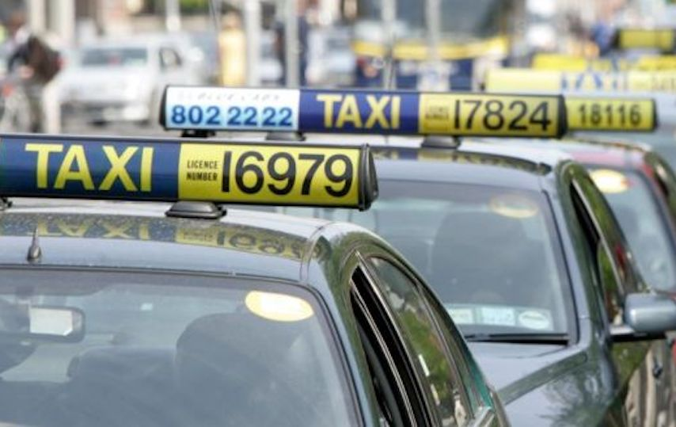

Dublin Bus is the biggest public transport provider in the Greater Dublin Area operating over 136 routes. Normal services run from 5.00am until midnight. The Nitelink service operates from midnight until 4.00am on Friday and Saturday nights.
Dublin Free Cycling is a non-competitive and relaxed cycling group, for people who want to meet up in Dublin and head off on cycling trips as part of a group... some trips may be fast paced and some slow, it depends on who shows up really.

NRC Taxis are proud to provide taxis to the people, communities and businesses of Dublin city and county for almost 60 years. Our services include many types of taxis including wheelchair accessible taxis and an airport taxi.
Luas is a tram/light rail system in Dublin, Ireland, which in 2017 carried 37.6 million passengers, an increase in 10% compared to 2016. There are two main lines: The Green Line, which began operating on 30 June 2004.
Previous
Next